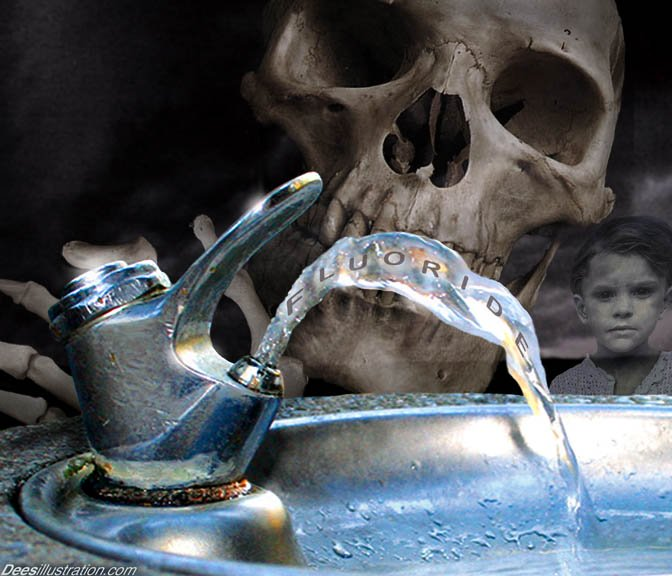
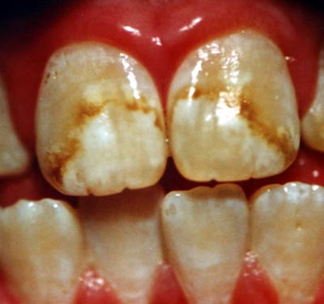
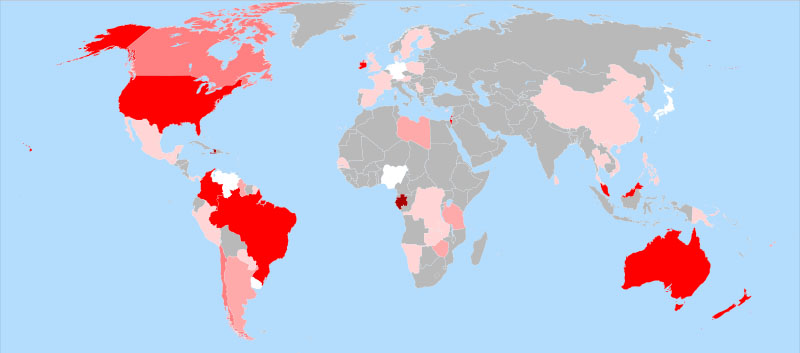

Fluoride Poisoning
Fluoride sounds like something good right, I mean you find it in your toothpaste as the main active ingredient and it’s added to almost all of America’s public drinking water, so it has to be good for you right? It’s even found in a lot of processed food and junk food like: soda, chips, donuts, and fried fast food. But what exactly is fluoride? The truth is that although it does occur in small amounts naturally (like in natural hot springs) it is always formed alongside with calcium, which naturally links with it making it safe for us. But when it’s added to our toothpaste and our public drinking water there isn’t enough calcium linked with it and, believe it or not, it’s actually a man-made toxic byproduct / waste material from petroleum, aluminum/steel, and fertilizer companies. That’s right. It’s an artificial chemical cocktail that used to be labeled as hazardous waste and disposed of. But of course disposing of waste cost a lot more money than to “claim” it’s safe and be able to sell it and make money from toothpaste companies and public water distributors. So in 1945 it was declared safe by the FDA to add into our public drinking water and in the 1970s it was added to our toothpaste.


Although sodium fluoride is technically a toxic waste material, it’s claimed that it does have substantial benefits in the prevention of tooth decay, but in only controlled amounts. The public was told this as a reason to allow it in most toothpastes and public drinking water: “It provides the greatest benefit to those who cannot afford preventive and restorative dentistry and reduces dental disease, loss of teeth, time away from work or school, and anesthesia-related risks associated with dental treatment.”
Interestingly fluoride has been used for nearly 30 years as an experimental therapy to treat osteoporosis before studies were ever conducted. Recently it has been evaluated in controlled clinical trials, and they showed no significant reduction in the rates of bone fractures related to the administration of fluoride. An FDA advisory panel then concluded that fluoride therapy is not effective in reducing osteoporosis.
In a public health service report, conducted in 1991, it was proven that among the more significant health conditions evaluated in relation to fluoride, intake can cause cancer, dental fluorosis, and bone fractures.
The fact of the matter is that fluoride is the #1 ingredient in any rat poison! Also, it’s one of the basic ingredients in both Prozac (used to “treat” depression, OCD, eating, and pain disorders) and Sarin nerve gas. The United States, Canada, U.K., Australia, New Zealand, and a few other countries add a “small” questionable amount to our public drinking water… but in other countries it’s illegal to do so, like in Europe. Still not sure if it’s good or bad? Let’s put it this way, the Nazis added fluoride to the drinking water in concentration camps to make the people more docile and subservient, meaning they would be easier to compile with and take orders. This is because the Nazis knew it directly affects our brain, causing cancer, and even lowering chances of reproduction. If you ever wanted to wipe out a certain race or reduce their population, this is the way to do it (to learn about other efforts to reduce the world’s population click here and research the “Georgia Stones”).

The other interesting thing is that it drastically reduces our brain’s ability to use our pineal gland due to calcium build up. Fluoride is magnetically attracted to our pineal gland, which makes it so much worst. Never heard of the pineal gland before? The pineal gland is one of the most important parts of our nervous system and is responsible for producing melatonin (controlling our sleep patterns) and serration (controlling our moods, keeping us from being depressed). This part of our brain was revered by nearly every ancient society for a number of other reasons as well, to learn more please click here. Fluoride also collects all the heavy metals in your body: lead, arsenic, aluminum, and mercy. The Scientific American study “Concluded that fluoride can subtly alter endocrine function, especially in the thyroid – the gland that produces hormones regulating growth and metabolism.”
A 2012 Harvard study proved that it lowers our I.Q. The truth is that this is a poison. Adding it to our drinking water is an evolving social experiment that started over 40 years ago. When it comes to toothpaste if you do swallow it there’s a warning label that says to contact a poison control center. The amount swallowed that is considered dangerous is only a pea –sized amount. There is the same amount of fluoride in that pea-sized toothpaste as it is in 8 ounces of water that has fluoride added to it
Today almost 60% of the United States population drinks fluoridated water, including residents of 46 of the nation’s 50 largest cities. Although you will see all over the internet it says that you can remove fluoride from your drinking water by purchases a reverse-osmosis filter system, it’s a complete scam. It’s impossible to remove fluoride completely from water once it’s added because the size of the fluoride particle is so similar in size to a water molecule that it’s basically impossible to filter one separate from the other. Other impurities and hard metals may be filter out. Even if you try to distill water by boiling it, the fluoride becomes stronger, and if you try to catch and condense the steam that’s produced the fluoride will still be there. The only way to by pass this is to either vote for your local city government to ban added fluoride to water or purchase safe bottled water that only contains naturally occurring fluoride that’s naturally bonded with calcium already. Search your state and city to know if fluoride is added to your local water, and search different bottle waters to see if they’re considered safe from toxic fluoride. The thing is although there’s a limit on how much fluoride may be added to toothpaste and drinking water, it’s believed that the limit is set too high making it unsafe to consume.
Luckily, you may simply purchase toothpaste that is natural, meaning fluoride free, in most stores. Although it’s likely that your local store will only hold one brand of toothpaste that is actually fluoride free, and may require you to search for it since it’s likely to be placed near the floor since Colgate brands take up the shelves that are at eye level.
If you’re been ingesting fluoride over the years now there are actually certain foods you can eat that will help reduce the amounts of un-healthy fluoride in your body. This will help improve all aspects of your health and brain functions. Your goal is simply to eat as naturally as you can, such as organic and raw (un-processed) vegetables, fruits, and meats. Again a lot of processed food has toxic fluoride added to it. Even conventional fruits and vegetables are sprayed with sulfur fluoride. It’s like an attack against us almost, bombarding us with all of this toxic fluoride. If you don’t have the money for organic food, try to scrub your food very well before you eat it.
Recap:
Advantages of adding Fluoride
1. Prevention of tooth decay (used in only very small amounts, and only natural fluoride… toxin fluoride (sodium fluoride) which is what’s placed in toothpastes today is bad for your teeth)
Disadvantages of adding Fluoride
1. causes cancer
2. dental fluorosis
3. bone fractures
4. docile and subservient, meaning they would be easier to compile with and take orders
5. drastically reduces our brain’s ability to use our pineal gland
6. thyroid gland
7. lowering IQ
Again, thanks to mass fluoridation of our municipal water supplies and inclusion of man-made fluoride in toothpastes and other dental and consumer products, most of us regularly consume dangerous amounts of a dangerous form of fluoride.
Wisdom-Square › Food Contamination › Fluoride Poisoning